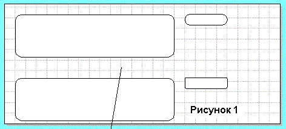
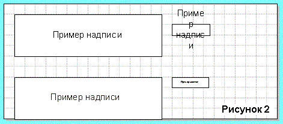
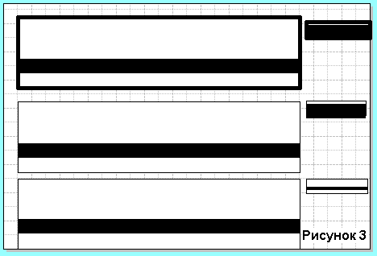
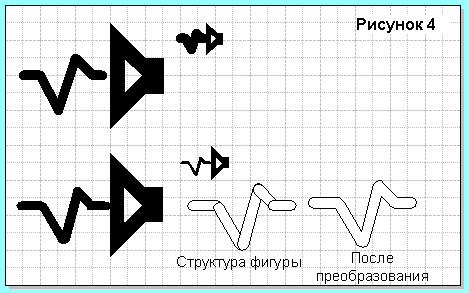
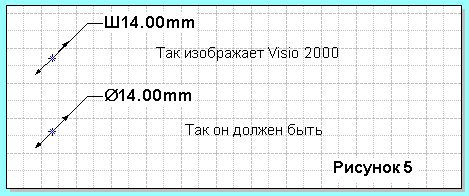
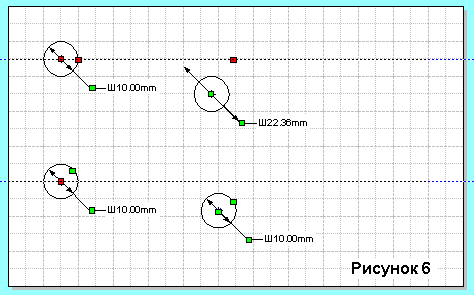

Методы создания масштабируемых объектов в Visio 2000.
Примечание: все действия в программе зависят от вашей версии Visio 2000 (EN:International English или RU:Russian Edition)
Все объекты в Visio 2000, как известно, состоят из векторов, но при создании масштабируемых объектов (раз так в 20) можно столкнуться с определенными трудностями.
При создании своих объектов я не использовал объекты трафаретов из состава Visio 2000, а пользовался только своими. Я не всегда мог просто предугадать поведение этих объектов, а при использовании своих объектов я всегда знал, как они себя поведут.
- Проблемы масштабирования объектов.
Если мы создадим объект Visio (прямоугольник, например) и применим к нему сглаживание углов, то при уменьшении масштаба величина этого сглаживания остается постоянной и не меняется пропорционально размерам объекта.

Как это исправить. Нужно нарисовать линию прямо по прямоугольнику. Выделить их вместе и применить к ним команду объединения (EN:Shape>Operations>Union RU:Фигура>Операции>Объединение), После этого сглаживание углов будет уже не свойство объекта Visio, а просто векторный объект с возможностью масштабирования.
- Проблема масштабирования надписей.
Если мы создадим объект Visio (прямоугольник, например) и сделаем в нем надпись, то при уменьшении объекта высота букв, длина надписи остаются неизменными.

Как это исправить. Открываем CorelDraw. Создаем в нем надпись тем же(!) шрифтом (высота букв нас не волнует) и копируем в буфер. Вставляем в Visio. Здесь эта надпись тот же векторный объект, подлежащий масштабированию. Накладываем надпись на исходник и изменяем размеры до нужных. Потом размещаем ее на объекте и объединяем (EN:Shape>Grouping>Group RU:Фигура>Группировка>Группировать). Эта группа полностью масштабируема.
- Проблема масштабирования линий.
Все линии, из которых состоят объекты, я делаю толщиной 0.01 мм. Почему: При максимальном уменьшении эта линия все равно будет самой тонкой, а при печати принтер сделает ее самой тонкой по своим возможностям (он не будет пытаться печатать линию 0.01 мм, а напечатает самой тонкой, какая в него заложена драйвером).

Как видно из верхнего объекта при его уменьшении толщина внутренней линии не сохраняется. Как это исправить. Заменой толстой линии прямоугольником. Рисуется прямоугольник по контуру линии и делается черная заливка (Важный момент: отключите у прямоугольника толщину линии в положение EN:None RU:Отсутствует).
- Проблема масштабирования векторных рисунков.
Иногда надо помимо надписей пояснять на объектах что-то рисунком.

Для этого применяется предыдущий способ. Мы воссоздаем нашу фигуру прямоугольными объектами и объединяем в векторный объект.
Далее общие советы, которыми я хотел поделиться.
- Знак диаметра в Visio. Он там где-то в трафаретах есть, но иногда требуется получить его в размерах.
Примечание: Вставка как символа из Word в Visio не поможет.
Просто в размерах напишите букву Ж, именно ж и именно заглавную. Далее выделяем только ж и выбираем шрифт Symbols.

- Объединение (Union) с линией любого объекта преобразует его в векторный объект, который масштабируется.
- Нельзя объединять векторные объекты (Union-объекты, т.е. те которые уже объединили и сделали масштабируемыми) между собой. Второй объект попросту исчезнет.
- Вставляя диаметр к объекту, делайте привязку точки диаметра ниже или выше середины объекта. Иначе при перемещении объекта его диаметр численно (но не фактически) изменится. Особенно это касается линий фиксации.

- Больше используйте Shortcut (горячие клавиши). Запомнить их не сложно, а в работе помогает и время экономит. Создание пользовательских "горячих клавиш" рассматривалось в предыдущей статье.
- Если у Вас мышь с колесиком, то Shift+Wheel это вправо-влево, Ctrl+Wheel это увеличение или уменьшение.
Вот и все.
Статьи: 1 2 3 4 5 6 7 8 9 10 11 12 13 14 15 16 17 18 19 20 21 22 23 24 25 26 27 28 29 30
В начало раздела
Автор: Ничков Алексей (a.k.a. Digitall)